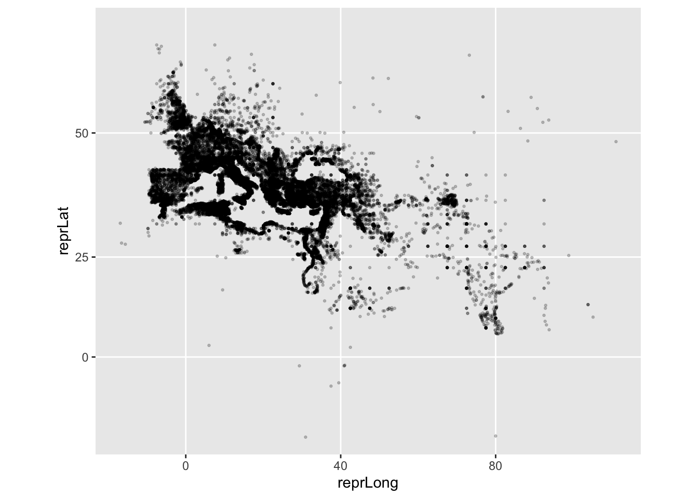
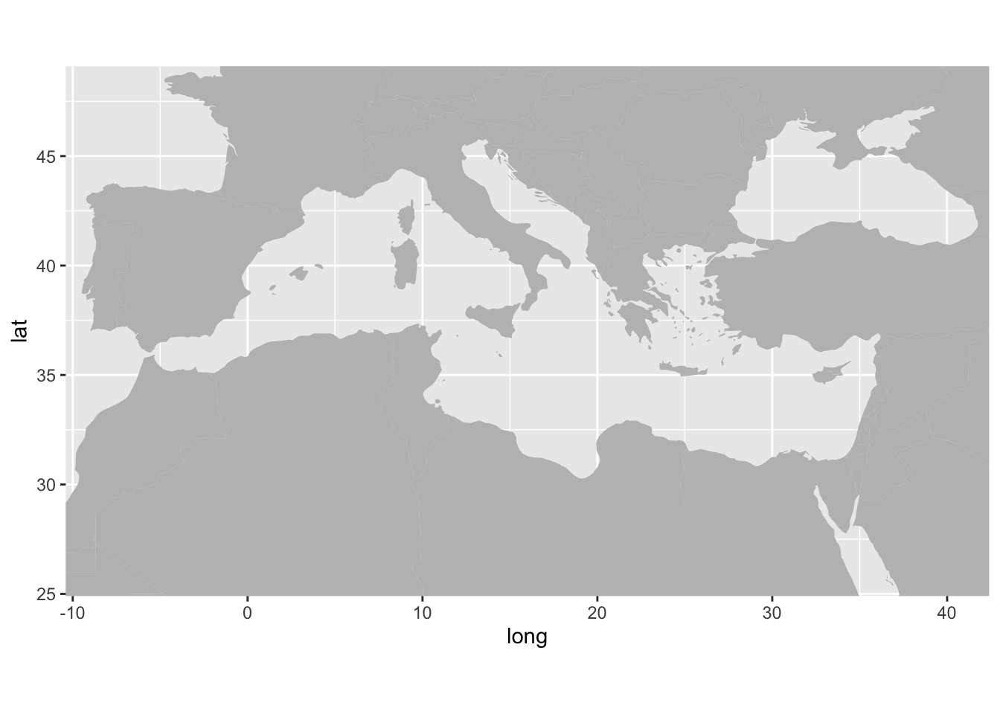
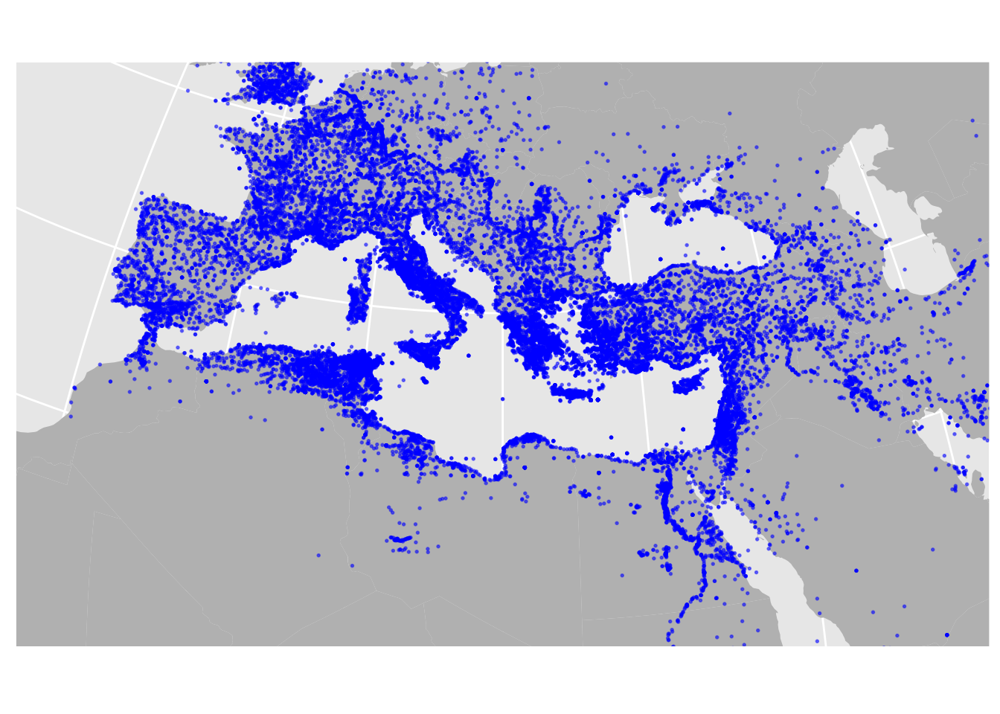

Teil 4 Karten erstellen (HOS)
4.1 Aufgaben
Besuchen Sie https://pleiades.stoa.org/ - worum geht es hier?
Finden Sie den kompletten aktuellen Datensatz für „locations“ als CSV-Datei.
Importieren Sie ihn in R und weisen Sie dem Datensatz den Namen
pleiadeszu.pleiades <- read_csv("http://atlantides.org/downloads/pleiades/dumps/pleiades-locations-latest.csv.gz")Finden Sie geeignete Werte für (einzelne) Längen- und Breitengrade im Datensatz.
pleiades$reprLong %>% # Längengrad summary() ## Min. 1st Qu. Median Mean 3rd Qu. Max. NA's ## -16.910 8.013 16.929 19.819 30.730 111.078 7292 pleiades$reprLat %>% # Breitengrad summary() ## Min. 1st Qu. Median Mean 3rd Qu. Max. NA's ## -20.27 36.25 39.17 39.55 43.72 62.50 7292Plotten Sie die Koordinaten auf x- und y-Achse mit
ggplot(). Was erkennen Sie?ggplot(pleiades) + geom_point(aes(x = reprLong, y = reprLat))Halbieren Sie die Größe und setzen Sie den Alpha-Wert der Punkte auf 0,2.
ggplot(pleiades) + geom_point(aes(x = reprLong, y = reprLat), size = 0.5, alpha = 0.2)Bringen Sie die Grafik in die Mercator-Projektion.
ggplot(pleiades) + geom_point(aes(x = reprLong, y = reprLat), size = 0.5, alpha = 0.2) + coord_map("mercator")
Schauen Sie sich diesen Befehl an:
map_data("world") %>% ggplot() + geom_polygon(mapping = aes(x = long, y = lat, group = group)) + coord_quickmap(xlim = c(-8, 40), ylim = c(26, 48))Versuchen Sie, jede einzelne Zeile nachzuvollziehen, indem Sie die entsprechenden Funktionen recherchieren.
Führen Sie den Befehl aus.

Ändern Sie die Farbe der Flächen in hellgrau.
map_data("world") %>% ggplot() + geom_polygon(mapping = aes(x = long, y = lat, group = group), fill = "grey") + coord_quickmap(xlim = c(-8, 40), ylim = c(26, 48))
Wählen Sie einen Kartenausschnitt, auf dem Portugal, Ägypten, Irak und Frankreich komplett zu sehen sind.
map_data("world") %>% ggplot() + geom_polygon(mapping = aes(x = long, y = lat, group = group), fill = "grey") + coord_quickmap(xlim = c(-8, 48), ylim = c(22, 50))Plotten Sie auf diesem Hintergrund den Datensatz
pleiades. Passen Sie dabei die Parameter so an, dass es Ihnen optisch zusagt.map_data("world") %>% ggplot() + geom_polygon(mapping = aes(x = long, y = lat, group = group), fill = "grey") + coord_quickmap(xlim = c(-8, 48), ylim = c(22, 50)) + geom_point(data = pleiades, mapping = aes(x = reprLong, y = reprLat), color = "blue", size = 0.3, alpha = 0.5)Wählen Sie für die Karte die Bonnesche Projektion mit Standardparallele bei 40°N.
map_data("world") %>% ggplot() + geom_polygon(mapping = aes(x = long, y = lat, group = group), fill = "grey") + coord_map("bonne", 40, xlim = c(-8, 48), ylim = c(22, 50)) + geom_point(data = pleiades, mapping = aes(x = reprLong, y = reprLat), color = "blue", size = 0.3, alpha = 0.5)Entfernen Sie alle Achsenbeschriftungen.
map_data("world") %>% ggplot() + geom_polygon(mapping = aes(x = long, y = lat, group = group), fill = "grey") + coord_map("bonne", 40, xlim = c(-8, 48), ylim = c(22, 50)) + geom_point(data = pleiades, mapping = aes(x = reprLong, y = reprLat), color = "blue", size = 0.3, alpha = 0.5) + theme(axis.title = element_blank(), axis.ticks = element_blank(), axis.text = element_blank())
(Achtung: knifflig!) Bilden Sie diese Grafik nach, die die Orte geordnet nach ältestem Fund darstellt:
pleiades %>% select(long = reprLong, lat = reprLat, timePeriods) %>% mutate(oldest = str_extract(timePeriods, "[ACHRL]")) %>% mutate(oldest = factor(oldest, levels = c("A", "C", "H", "R", "L"))) -> pleiades_periods map_data("world") %>% filter(region != "Antarctica") %>% ggplot() + geom_polygon(mapping = aes(long, lat, group = group), fill = "darkgreen") + coord_map("albers", parameters = c(16, 37), xlim = c(-8, 40), ylim = c(26, 48)) + geom_point(data = pleiades_periods, mapping = aes(long, lat, color = oldest), size = 0.2, alpha = 0.3) + scale_color_brewer("Früheste Epoche", breaks = c("A", "C", "H", "R", "L"), labels = c("1000-550 v.d.Z.", "550-330 v.d.Z.", "330 v.d.Z. - 30 n.d.Z.", "30-300 n.d.Z.", "300-640 n.d.Z."), palette = "YlOrBr") + theme(axis.title = element_blank(), axis.ticks = element_blank(), axis.text = element_blank(), panel.background = element_rect(fill = "darkblue"), panel.grid = element_line(color = "blue")) + guides(colour = guide_legend(override.aes = list(alpha = 1, size = 8, shape = 15)))